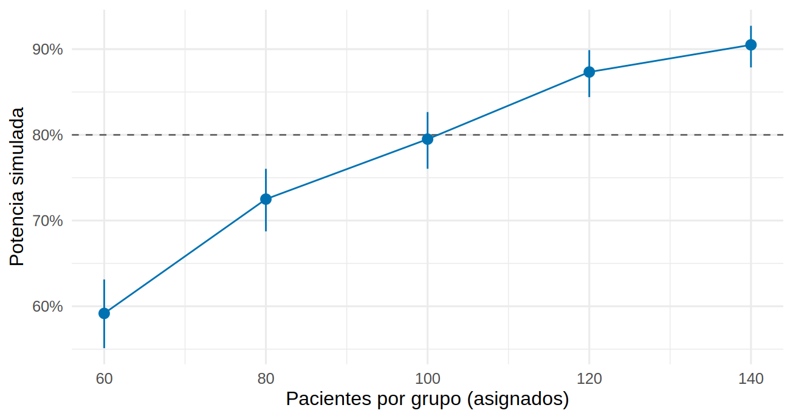

La simulación como herramienta de potencia
Tu protocolo del segundo ensayo de bicarbonato dice: «análisis por ANCOVA, ajustado por la TFGe basal y la albuminuria; se espera que el grupo activo pierda más pacientes que el placebo; cuatro visitas (0, 6, 12 y 24 meses)». El revisor pide la potencia. ¿Qué fórmula se aplica? Ninguna sirve tal cual: están hechas para una t simple con datos completos. Para estos diseños, la potencia se calcula ensayando el ensayo: se simula miles de veces y se cuenta cuántas veces el análisis previsto detecta el efecto.
Lo que vamos a hacer
- Escribir y usar una función reutilizable,
potencia_sim(), y entender su error de Monte Carlo. - Comparar tres análisis del mismo ensayo (valor final, cambio, ANCOVA) y ver cuánto vale la covariable basal.
- Simular pérdidas diferenciales y medidas repetidas, y buscar el n que da el 80 %.
Paso 1: la receta en cuatro pasos
Simular la potencia es repetir un ensayo de mentira muchas veces:
-
Generar los datos de un ensayo con el efecto que quieres detectar (
generar). -
Analizar ese ensayo como lo harás en la vida real (
analizar) y guardar el valor p. -
Repetir (
nsimveces). - Contar en cuántos ensayos p < 0.05: esa proporción es la potencia.
El corazón de potencia_sim() (la versión completa, con el intervalo de confianza y el control de errores, está en R/funciones_cap20.R) son tres líneas:
p <- replicate(nsim, analizar(generar(n))["p"]) # pasos 1 a 3
mean(p < 0.05) # paso 4: la potencia
binom.test(sum(p < 0.05), nsim)$conf.int # su intervalo de confianza de Monte CarloLos datos los produce generar_tfg(): un ensayo simulado con TFGe basal, una covariable pronóstica (por ejemplo, la albuminuria), pérdidas, no adherencia y un efecto del fármaco. Sus argumentos son:
args(generar_tfg)function (n, efecto = 1, sd_cambio = 2.6, sd_basal = 6, r2_cov = 0.25,
perdida = c(0, 0), informativa = 0, adherencia = 1, contaminacion = 0)
NULLEmpezamos con lo más simple, un ensayo con 108 pacientes por grupo, sin pérdidas, que mide el cambio de TFGe a 12 meses con una t. Sabemos la respuesta de la fórmula (20.2): potencia ≈ 80 % para un efecto de 1.0.
gen <- \(n) generar_tfg(n, efecto = 1.0) # ensayo con efecto = 1.0 mL/min/1.73 m2
an_cambio <- function(d) { # t sobre el cambio de TFGe
m <- lm(I(tfg12 - tfg0) ~ brazo, data = d)
c(p = summary(m)$coefficients["brazo", 4], est = coef(m)[["brazo"]])
}
base <- potencia_sim(gen, an_cambio, n = 108, nsim = 1000, semilla = 1)
base# A tibble: 1 × 9
n potencia ic_inf ic_sup error_mc est_media est_signif nsim fallidos
<dbl> <dbl> <dbl> <dbl> <dbl> <dbl> <dbl> <int> <int>
1 108 0.797 0.771 0.822 0.0127 1.01 1.14 1000 0Qué vemos. La potencia simulada es 79.7 % (IC 95 % de Monte Carlo: 77.1 % a 82.2 %), frente al 80.3 % de pwr: la fórmula cae dentro del intervalo. La estimación media del efecto es 1.01, es decir, el análisis recupera el efecto de 1.0 que pusimos: el generador y el análisis están bien conectados. Esa comprobación siempre es el primer paso: si tu simulación no reproduce un caso con fórmula conocida, no te fíes de ella en el caso complejo.
Paso 2: cuántas réplicas son suficientes
La simulación es un experimento y tiene su propio error: el error de Monte Carlo, √(p(1 − p)/nsim). Con pocas réplicas, la potencia «bailará»:
# A tibble: 3 × 5
nsim potencia ic_inf ic_sup error_mc
<dbl> <dbl> <dbl> <dbl> <dbl>
1 100 0.76 0.664 0.84 0.043
2 400 0.8 0.757 0.838 0.02
3 1600 0.814 0.794 0.833 0.01 nsim_1pt <- ceiling(1.96^2 * 0.8 * 0.2 / 0.01^2) # para un IC de ±1 punto con potencia 80 %Qué vemos. Con 100 réplicas, el IC de la potencia mide ±9 puntos; con 1 600, ±1.9. El error baja con la raíz de nsim: para conocer la potencia con ±1 punto necesitarías unas 6 147 réplicas. Una regla práctica: 1 000 a 2 000 réplicas para explorar y 5 000 o más para el número que irá al protocolo. Fija siempre la semilla (semilla =) y anota cuántas réplicas usaste.
Paso 3: el análisis también cuenta (ANCOVA)
Con los mismos datos se pueden analizar de tres maneras. potencia_sim() permite compararlas con la misma semilla y el mismo generador:
an_final <- function(d) { # solo el valor final de TFGe
m <- lm(tfg12 ~ brazo, data = d); c(p = summary(m)$coefficients["brazo", 4], est = coef(m)[["brazo"]])
}
an_ancova <- function(d) { # ANCOVA: ajusta por TFGe basal y covariable
m <- lm(tfg12 ~ brazo + tfg0 + z, data = d); c(p = summary(m)$coefficients["brazo", 4], est = coef(m)[["brazo"]])
}
analisis <- bind_rows(`Valor final` = potencia_sim(gen, an_final, 108, 1000, semilla = 1),
`Cambio (t)` = base,
`ANCOVA` = potencia_sim(gen, an_ancova, 108, 1000, semilla = 1), .id = "analisis")
analisis |> select(analisis, potencia, ic_inf, ic_sup, est_media) |> mutate(across(where(is.numeric), \(x) round(x, 3)))# A tibble: 3 × 5
analisis potencia ic_inf ic_sup est_media
<chr> <dbl> <dbl> <dbl> <dbl>
1 Valor final 0.198 0.174 0.224 0.984
2 Cambio (t) 0.797 0.771 0.822 1.01
3 ANCOVA 0.904 0.884 0.922 1.01 # Fórmula: el ANCOVA reduce la DE en sqrt(1 - R2); aquí R2 = 0.25
pwr.t.test(n = 108, d = 1 / (2.6 * sqrt(1 - 0.25)))$power[1] 0.901288Qué vemos.
- Analizar solo el valor final da una potencia de 20 %: la TFGe final varía mucho entre pacientes (por la TFGe basal, DE de 6), y ese ruido tapa el efecto. Usar la basal como covariable es casi obligatorio.
- El cambio respecto de la basal recupera el 80 % y el ANCOVA sube a 90 %, porque además usa la covariable pronóstica (que explica el 25 % de la varianza en este escenario hipotético). La fórmula con la DE reducida (
pwr) da 90 %, coincidiendo con la simulación. - Dicho de otro modo: el ANCOVA permite un ensayo más pequeño. El n para 80 % pasa de 108 a unos 81 por grupo (aprovechable solo si prespecificas el modelo en el protocolo).
Paso 4: abandono diferencial
El simulador del ensayo (Cap. 11) pierde más pacientes en el brazo activo que en el placebo. Simulemos tres situaciones con el ANCOVA: (a) sin pérdidas, (b) 10 % en placebo y 25 % en activo, al azar, y (c) las mismas cifras, pero perdiendo más a quienes evolucionan peor (pérdida informativa):
escenarios <- list(`(a) Sin pérdidas` = \(n) generar_tfg(n, perdida = c(0, 0)),
`(b) 10 % / 25 %, al azar` = \(n) generar_tfg(n, perdida = c(0.10, 0.25)),
`(c) 10 % / 25 %, informativas` = \(n) generar_tfg(n, perdida = c(0.10, 0.25), informativa = 1))
perdidas <- imap_dfr(escenarios, \(g, nombre) potencia_sim(g, an_ancova, 108, 1000, semilla = 3) |> mutate(escenario = nombre))
perdidas |> select(escenario, potencia, ic_inf, ic_sup, est_media) |> mutate(across(where(is.numeric), \(x) round(x, 3)))# A tibble: 3 × 5
escenario potencia ic_inf ic_sup est_media
<chr> <dbl> <dbl> <dbl> <dbl>
1 (a) Sin pérdidas 0.906 0.886 0.923 0.982
2 (b) 10 % / 25 %, al azar 0.836 0.812 0.858 0.982
3 (c) 10 % / 25 %, informativas 0.954 0.939 0.966 1.23 # Fórmula aproximada para (b): menos pacientes con dato (pérdida media 17.5 %)
pwr.t.test(n = 108 * (1 - 0.175), d = 1 / (2.6 * sqrt(0.75)))$power[1] 0.838455Qué vemos.
- Con pérdidas al azar la potencia baja de 91 % a 84 %: justo lo que anticipa «tener un 17.5 % menos de pacientes» (la fórmula da 84 %). Aquí sí basta con inflar el n (20.2).
- Con pérdidas informativas la potencia sube (95 %) y la estimación media del efecto es 1.23, no 1.0. No es una buena noticia sino un sesgo: al irse más pacientes que evolucionan mal del brazo activo, el bicarbonato parece mejor de lo que es. La «potencia» ya no mide la capacidad de detectar el efecto verdadero. Con pérdidas informativas el problema es de sesgo y no se arregla con más pacientes.
Paso 5: medidas repetidas
Con cuatro visitas (0, 6, 12 y 24 meses), el análisis puede usar toda la trayectoria: comparar la pendiente de TFGe entre grupos. Ningún pwr hace esto. Generamos TFGe con pendiente individual aleatoria y error de medición como en el simulador del libro (DE de pendiente 1.3 y error de 2.2, que reproducen la DE de 2.6 del cambio a 12 meses) y comparamos tres análisis con 54 pacientes por grupo:
meses <- c(0, 6, 12, 24)
generar_rep <- function(n, efecto = 1.0, sd_pend = 1.3, sd_err = 2.2) {
N <- 2 * n; brazo <- rep(0:1, each = n)
tfg0 <- rnorm(N, 30, 6)
pend <- -3 + efecto * brazo + rnorm(N, 0, sd_pend) # pendiente individual (mL/min/año)
y <- sapply(meses, \(m) tfg0 + pend * m / 12 + if (m > 0) rnorm(N, 0, sd_err) else 0)
list(brazo = brazo, y = y)
}
set.seed(1)
chequeo <- replicate(300, {d <- generar_rep(100); sd(d$y[, 3] - d$y[, 1])}) # ¿reproduce la DE de 2.6?
mean(chequeo)[1] 2.607736an_12m <- function(d) { # solo la visita de 12 meses (ANCOVA con la basal)
m <- lm(d$y[, 3] ~ d$brazo + d$y[, 1]); c(p = summary(m)$coefficients[2, 4], est = coef(m)[[2]])
}
an_pend <- function(d) { # pendiente de cada paciente (MCO) y una t entre grupos
tc <- meses / 12 - mean(meses / 12)
pend <- as.vector(d$y %*% tc) / sum(tc^2)
c(p = t.test(pend ~ d$brazo, var.equal = TRUE)$p.value, est = unname(diff(tapply(pend, d$brazo, mean))))
}
an_mixto <- function(d) { # modelo mixto con pendiente aleatoria: efecto tiempo x brazo
largo <- tibble(id = rep(seq_along(d$brazo), 4), t = rep(meses / 12, each = length(d$brazo)),
brazo = rep(d$brazo, 4), y = as.vector(d$y))
m <- suppressWarnings(lmer(y ~ t * brazo + (t | id), data = largo, control = lmerControl(check.conv.singular = "ignore")))
c(p = summary(m)$coefficients["t:brazo", "Pr(>|t|)"], est = fixef(m)[["t:brazo"]])
}
gr <- \(n) generar_rep(n, efecto = 1.0)
rep_res <- bind_rows(`Visita de 12 meses` = potencia_sim(gr, an_12m, 54, 1000, semilla = 5),
`Pendiente (dos etapas)` = potencia_sim(gr, an_pend, 54, 1000, semilla = 5),
`Modelo mixto (lme4)` = potencia_sim(gr, an_mixto, 54, 150, semilla = 5), .id = "analisis")
rep_res |> select(analisis, nsim, potencia, ic_inf, ic_sup, est_media) |> mutate(across(where(is.numeric), \(x) round(x, 3)))# A tibble: 3 × 6
analisis nsim potencia ic_inf ic_sup est_media
<chr> <dbl> <dbl> <dbl> <dbl> <dbl>
1 Visita de 12 meses 1000 0.503 0.472 0.534 0.979
2 Pendiente (dos etapas) 1000 0.814 0.788 0.838 0.99
3 Modelo mixto (lme4) 150 0.853 0.786 0.906 0.977Qué vemos. La DE del cambio a 12 meses simulada es 2.61 (el generador reproduce el piloto). Con 54 por grupo, el análisis de la visita de 12 meses tiene una potencia de 50 %; usar todas las visitas (pendiente) llega a 81 %, y el modelo mixto, con solo 150 réplicas (IC de 79 % a 91 %), a 85 %: ambos análisis de trayectoria concuerdan. La ganancia es enorme (el mismo ensayo, con el mismo número de pacientes, pasa de moneda al aire a ensayo potente), pero depende de supuestos que debes defender: trayectorias lineales, efecto que acumula con el tiempo y datos completos. Además la pregunta es otra (diferencia de pendiente, no de cambio a 12 meses): la potencia solo compara análisis que responden a la misma pregunta.
Paso 6: buscar el n para el 80 %
Para escoger el tamaño con el diseño real (ANCOVA, pérdidas 10 % / 25 % al azar) se simula una rejilla de tamaños y se interpola:
g_b <- \(n) generar_tfg(n, perdida = c(0.10, 0.25))
rejilla <- map_dfr(c(60, 80, 100, 120, 140), \(n) potencia_sim(g_b, an_ancova, n, nsim = 600, semilla = 11))
n_80 <- approx(rejilla$potencia, rejilla$n, xout = 0.80)$y # interpolación lineal
ggplot(rejilla, aes(n, potencia)) +
geom_hline(yintercept = 0.8, linetype = "dashed", color = "grey40") +
geom_pointrange(aes(ymin = ic_inf, ymax = ic_sup), color = "#0072B2") + geom_line(color = "#0072B2") +
scale_y_continuous(labels = scales::percent) +
labs(x = "Pacientes por grupo (asignados)", y = "Potencia simulada")
Interpolando, la potencia llega al 80 % con unos 102 pacientes por grupo (el cálculo sin pérdidas y con ANCOVA daba 81; dividir entre 1 − 0.175 sugiere 99; la diferencia cabe en el error de Monte Carlo y de la interpolación). El último paso, siempre: volver a simular con ese n y más réplicas para confirmarlo y reportar su IC.
Trampas frecuentes
- Simular el mundo equivocado. La simulación solo responde por lo que pusiste en el generador. Si el efecto, la DE o las pérdidas son suposiciones malas, los números salen precisos pero inútiles. Varía los supuestos (sensibilidad) en vez de simular un solo escenario.
- Pocas réplicas y sin semilla. Con 100 réplicas, la potencia tiene unos ±9 puntos de error.
- Confundir potencia y sesgo. Como en el Paso 4, un análisis sesgado puede mostrar potencia alta. Mira siempre también la estimación media frente a la verdad.
- Cuando el diseño no tiene fórmula (covariables, pérdidas, medidas repetidas), simula el ensayo y cuenta rechazos:
potencia_sim()= generar, analizar, repetir, contar. -
Valida el simulador con un caso de fórmula conocida: aquí, 80 % simulada frente a 80 % de
pwr. - Reporta el error de Monte Carlo: 1 000 réplicas dan ±2.5 puntos.
- El análisis cuenta: valor final 20 %, cambio 80 %, ANCOVA 90 % con el mismo ensayo.
- Las pérdidas al azar se compensan con n; las informativas crean sesgo que ningún n corrige.
Ejercicio
- Con
potencia_sim(), calcula la potencia del ANCOVA conefecto = 0.5y 108 por grupo. ¿Coincide conpwr.t.test(n = 108, d = 0.5 / (2.6 * sqrt(0.75)))? - Cambia
r2_cova 0 en el generador. ¿Cuánto vale ahora la covariablez(ANCOVA frente al cambio)? - En el Paso 4(c), prueba
informativa = 2. ¿Qué pasa con la estimación media del efecto?